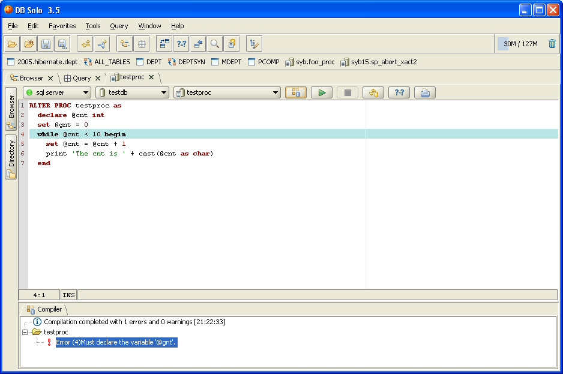
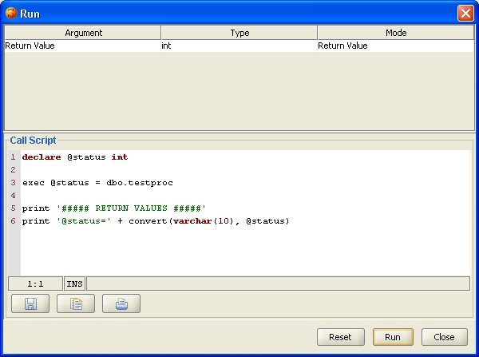
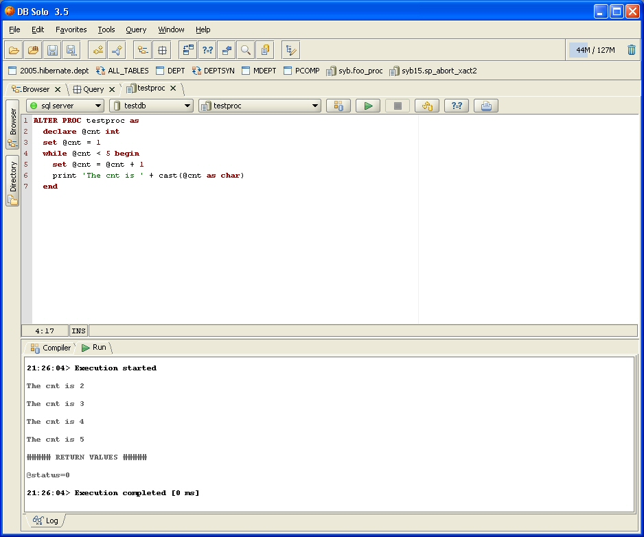
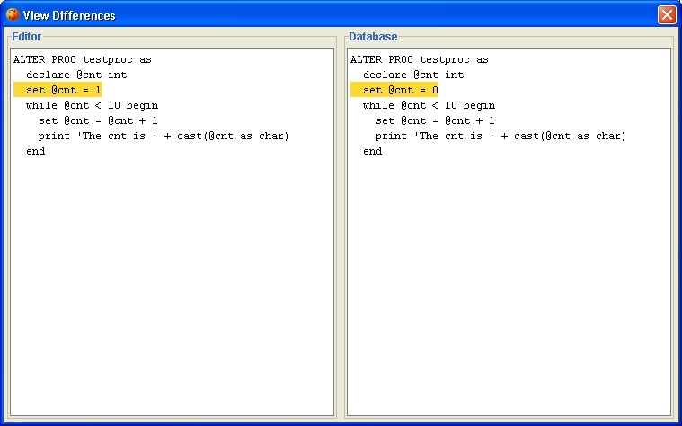

The SQL Server Procedure Editor allows you to view, edit, compile and run SQL Server stored procedures and functions. It is supports all SQL Server versions starting from SQL Server 2000. It also supports all platforms that DB Solo runs on; Windows, Linux and MacOS.
To start the procedure editor, navigate to the function or procedure in the schema browser, select the 'Source Code' tab and click on the 'Edit In Procedure Editor' button. Alternatively, you can right-click on the procedure in the schema browser and select 'Edit In Procedure Editor'. At this point a new procedure editor tab will be opened for the procedure you selected.
The left side of the procedure editor has two buttons that will show a mini-panel when selected. The Browser and Directory panels work the same way as in the query window. The procedure editor has its own toolbar that allows you to perform various operations on the selected procedure. It also allows you to select a different procedure to edit. The procedure can be under a different server or different databasewithin the same server. The toolbar has the following buttons
To compile the procedure using the latest code in the editor, click on the Compile-button in the toolbar. The bottom of the screen will show the results of the compilation in a tab named 'Compiler'. In case of errors, the errors will be listed in this tab including the line numbers and SQL Server error codes. When you select an error from the list of errors, the corresponding line will be highlighted in the source editor. The first error will be selected automatically. The screen shot below shows an example where a variable name has been misspelled.

After compiling the code successfully, you can run the program unit. To do so, click on the 'Run' button in the toolbar. This will bring up the Run-dialog that will contain a T-SQL block that will be executed when you click on 'Run'. T-SQL code will be automatically generated to declare the required variables and call the procedure/function correctly. Notice that you can modify the generated code, e.g. to change the values that will be passed into your program unit. The modified code will be automatically persisted for further executions. To revert back to the automatically-generated block, click on the 'Reset' button. To close the dialog without running the procedure, click on the 'Close' button.

When the program unit is running, you can stop the execution by clicking on the 'Stop' button in the toolbar. After the procedure has been executed, you will see the execution results in the 'Run' tab at the bottom of the screen. Output from the print statements, if any, will also be shown in this tab.

The 'Compare' button in the toolbar allows you to compare the source code in the editor and the code in the database. This is useful if you don't remember what exactly you modified and don't want to compile before you know for sure. When the button is clicked, a new dialog will be show that shows the code in the editor on the left and the code in the database on the right. All lines that are different/added/removed will be highlighted.

| Back to Index |
DB Solo www.dbsolo.com support@dbsolo.com |